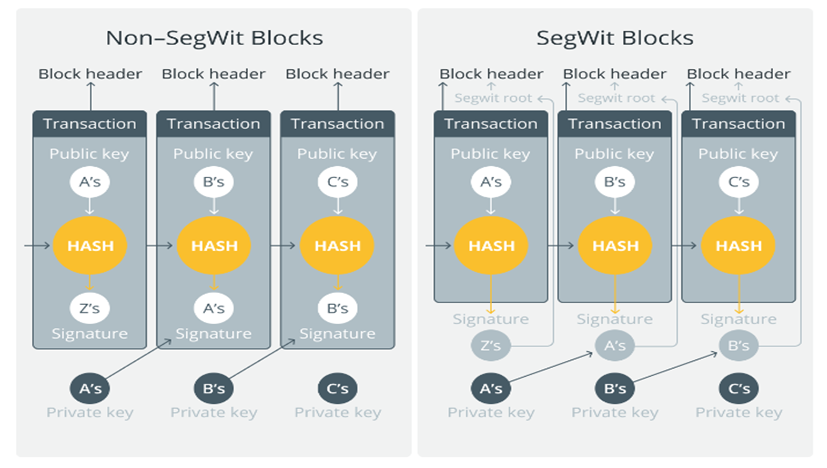

Bitcoin - Examining a Layer 1 & 2 solution and adoption for a payment use case
Assignment Topic
The Bitcoin blockchain can process only seven (7) transactions per second. Its low throughput impedes its adoption as a payment system. Numerous solutions were implemented to address Bitcoin’s scalability issue. In this question, you are required to study and evaluate two (2) Bitcoin scalability proposals.
Part 1
Examine one (1) layer 1 and one (1) layer 2 scalability solution for Bitcoin.
Part 2
Your company decides to use Bitcoin as a payment method. Choose either the adoption of a layer 1 or layer 2 solution. Justify your recommendation.
Part 1 - Layer 1 & Layer 2 solution
Layer 1 and layer 2 scalability solutions are different in their role and focus on the blockchain. Layer 1 solutions aim to change and improve the existing blockchain architecture, and include proposals like increasing the block size, reducing transaction size, changing the transaction format, changing the consensus algorithm and sharding.
Layer 2 solutions instead, looks to increase the transaction throughput by alleviating the computational load, transferring some transactions offline and rely on secondary networks or technology that operate on top of the underlying blockchain. These include the use of rollups, sidechains, state channels and nested blockchains.
Layer 1 solution - Segregated Witness (SegWit)
Segregated Witness is a proposed change in the format or structure of transactions that allows for digital signatures to be removed to a separate data structure and not form part of transactions included in the block.
A block is limited to 1Mb in size, with the majority of space taken up by transactions. The main components in a transaction are inputs (where coins are coming from) and outputs (where coins are going to). Most of the space in transactions is taken up by a digital signature located in the inputs. This accounts for around 65% of the space within a single transaction and acts as proof that the sender controls the wallet that has the required funds to make the payment (Academy, 2021).
The Segregated witness solution re-locates this signature from the input to its own structure towards the end of the transaction, known as the ‘witness’ section. This allows for an ‘increase’ in the block size limit, where more transactions can effectively be inserted into the blocks. As shown in Fig1, the removal of signatures free up block space and enables the insertion of more transactions into the block.

Layer 2 solution - The Lightning Network
The lightning network is a layer 2 solution where most of the transactions between two counterparties are moved off-chain. Removing small and frequent payment transactions off chain can help achieve a dramatic increase in both transaction speed and throughput, making the Bitcoin network more scalable.
In the Bitcoin network, every single transaction has to be broadcast to every node. Broadcasted transactions also have to be included in blocks that are mined and recorded on the blockchain. This effective requires every transaction to be broadcasted twice to all nodes in the network. On average, each block is created every 10 minutes and has a size limit of 1 Mb. This places limits on the number of transactions that can be processed as the network becomes more heavily utilized.
Payment channels in the Lightning network are examples of state channels, which represent an off-chain state alteration mechanism which is secured by eventual settlement on the blockchain. State channel solutions aim to bring ‘unimportant’ transactions offline or off-chain so as not to flood the main network. These off-chain transactions are not subject to transaction fees and can occur at high frequencies.
Payment channels are formed on top of multi-signature addresses which are created from the public keys of the two transacting parties, thereby putting into effect a requirement for a signature quorum. For example, in a 2-of-2 multi-signature address, the bitcoin can only be unlocked and spent if both participants sign to spend the funds.
When opening a new payment channel, two parties; Alice, or Bob or both commit initial funds (bitcoins) to this multi-signature address by sending a transaction, called a funding transaction to the Bitcoin network. The committed bitcoins represent the channel capacity, which is the maximum amount of bitcoin that can be transferred in the payment channel. The funding transaction includes a ‘refund’ transaction that protects the sender of the initial funds should the counterparty withhold his/her signature and deny the sender access to his/her funds. This ‘refund’ transaction represents the first commitment transaction in the payment lifecycle.
Alice and Bob can transfer bitcoins to each other multiple times by creating new commitment transactions and exchanging signatures each time. Each new commitment transaction encodes the latest balance between Alice and Bob, altering the initial state but not broadcasting it to the Bitcoin network. This enables Alice and Bob to transfer an unlimited number of payments to each other without having to interact with the underlying Bitcoin network.
A cheating counterparty that posts an older commitment transaction with a higher balance amount and closes the payment channel without consent will be encumbered by additional transactions that are created during force closure. The Delivery transaction, Revocable delivery transaction and Branch Remedy transactions function to enable cheated parties to claim their funds immediately, impose a time lock on cheating parties before they can use funds and punishes the cheater by confiscating his/her balances. These fail-safe measures and penalty mechanism disincentives cheating parties and reduces the need for trust amongst counterparties.
In terms of transaction fees, Alice and Bob only need to pay transactions fees twice (when the payment channel is opened and closed). No transaction fees are charged for transactions in between as these are off-chain and not broadcasted to the network.
When Alice and Bob conclude their payments and decide close their payment channel, they simply sign a closing commitment transaction which will then be broadcast to the main network. In the lifetime of a payment channel, there are only 2 transactions that has to be broadcasted and verified in the Bitcoin network.
Users also do not need to open multiple individual payment channels with every party they wish to transact with. The lightning network enables for the routing of transactions by connecting multiple payment channels, creating a path from the payment source to payment destination, and allowing for transactions to be forwarded to any of the network participants. If Alice has an existing payment channel with Bob, and if Bob has another payment channel with Charlie; then Alice can route her payments to Charlie via Bob who acts as an intermediary.
Transactions can be sent through the network of payment channels without the need to trust any of the intermediaries. A node constructs a path by connecting with channels with enough capacity using the possible shortest routes it can find. The communication between nodes is encrypted point to point. Intermediary nodes can verify and decrypt their own portion of the transaction message but cannot identify who the sender and receiver of the payment is, or their own position in the path (Mastering the Lightning Network – Aantonop, n.d.).
Part 2 - Adoption for a Payment Use case
A company using bitcoin as a payment method for its business activities, would have the following considerations and requirements:
1) Fast and secure payments
2) Finality of transactions
3) Privacy of transaction data
4) Privacy of company identity
5) High transaction throughput
6) Low transaction fees
7) Efficient and frictionless cross border payments
8) Secure from centralized points of failure and attack
9) Available round the clock
Existing centralized payment systems can accommodate a high transaction throughput but have inherent risks like counterparty risk, system failures, cyber-attacks and denial of service attacks and high transaction fees. Further, to participate in centralized payments systems you would need to have accounts with specific financial institutions or payment entities where terms of service are usually always in their favour. We need to trust that banks and payment companies act in good faith, in our best interests and do not change the rules to benefit and profit from rent-seeking motives.
On the other hand, the Bitcoin network, with its decentralised nature and cryptographic proof of work consensus, makes transactions more secure, transparent, and private but may not be able to support a large volume of transactions.
The Bitcoin network is slow compared to centralized payment systems because of consensus but is also more secure. Transactions are append-only and immutable, which makes it less vulnerable to manipulation and forgery.
When considering between scalability, security, and decentralization; a business should lean towards security and decentralization. Security is important as transactions are more often high value and crucial to the business operations. With decentralization, there is less dependency on central parties and intermediaries which could potentially be points of failure. As much as a high capacity of transactions is useful for a business, it would not make sense if the payments were insecure or vulnerable to points of failure. To this point, the real question would be how to achieve a higher transaction throughput through layer 1 or layer 2 solutions.
I would argue that layer 1, in its existing form, despite being ‘slow’ and ‘inefficient’ still functions as a secure environment for high value transfers.
Layer 1 solutions aim to change and improve the underlying blockchain architecture, and include solutions like increasing the block size, changing the consensus algorithm and Sharding. However, each comes with its undesirable consequence.
For example, increasing the block size could help increase the transaction throughput by enabling more transaction to be included in each block. However, with larger block sizes, more work needs to be done by miners and validators during proof of work. This could technically increase the computational load required to perform validation and mining, enabling only larger entities and groups to be economically capable of performing the ‘work’. This can lead to centralization and collusion.
Changing the consensus protocol from proof of work to proof of stake, may potentially make achieving consensus faster as miners no longer have to compete with each other and just be randomly selected to mine the blocks. However, this just simply means that participants with higher stakes gain a higher change and probability of being selected. Similarly, this can lead to centralization and incentivise more collusion.
Sharding refers to the splitting up of miners into separate and independent groups, where each group validate separate sets of transactions concurrently. However inter-shard communication can be costly and inefficient.
For these reasons, a layer 2 solutions like state channels would be appropriate to help businesses use the Bitcoin network more efficiently. Specifically, using the Lightning network can enable businesses to move frequent smaller value transactions off-chain, thereby reserving high value transactions only for the main chain.
The company can open and maintain payment channels with counterparties and transfer unlimited frequent payments to them as and when required. Security measures are in place with multi-sig addresses requiring both parties to agree and sign off on transactions before they are completed. Further, should one party cheat and abruptly posts an older transaction and close the payment channel, the affected party can 1) post Delivery transactions to recover their funds immediately and 2) post Branch remedy transactions to confiscate the cheater’s balances. This would sufficient disincentive any cheating attempt.
The company would not need to open multiple individual payment channels with every counterparty. The lightning network enables for the routing of transactions by connecting multiple payment channels, allowing for transactions to be forwarded to any network participants. The communication between nodes is encrypted point to point, where forwarding nodes can only decrypt their own portion of the route and cannot identify who the sender and receiver of the payment is, or their own position in the path. This enables the company to maintain privacy of identity and transaction information.
In terms of transaction fees, the company would only pay transactions fees twice ie when the payment channel is opened and closed. No transaction fees are charged for transactions in between as these are off-chain and not broadcasted to the network.
By utilizing solution like the Lightning network, the company have more transactions done faster and with less cost. Further, as these off-chain transactions do not need to be broadcasted to the main-chain, the full extent of the transaction history between counterparties do not have to be revealed to the public blockchain. Finally, with the fail-safe and penalty mechanisms in place, the company can safely transact with multiple counterparties without fear of cheating (Mastering the Lightning Network – Aantonop, n.d.).
References
Academy, B. (2021, April 29). A Beginner’s Guide to Segregated Witness (SegWit). Binance Academy. https://academy.binance.com/en/articles/a-beginners-guide-to-segretated-witness-segwit
Kuznetsov, N. (2019, September 28). SegWit, Explained. Cointelegraph. https://cointelegraph.com/explained/segwit-explained
Mastering the Lightning Network – aantonop. (n.d.). https://aantonop.com/books/mastering-the-lightning-network/
Academy, B. (2022, September 29). Blockchain Layer 1 vs. Layer 2 Scaling Solutions. Binance Academy. https://academy.binance.com/en/articles/blockchain-layer-1-vs-layer-2-scaling-solutions
Academy, B. (2022, September 29). Blockchain Layer 1 vs. Layer 2 Scaling Solutions. Binance Academy. https://academy.binance.com/en/articles/blockchain-layer-1-vs-layer-2-scaling-solutions